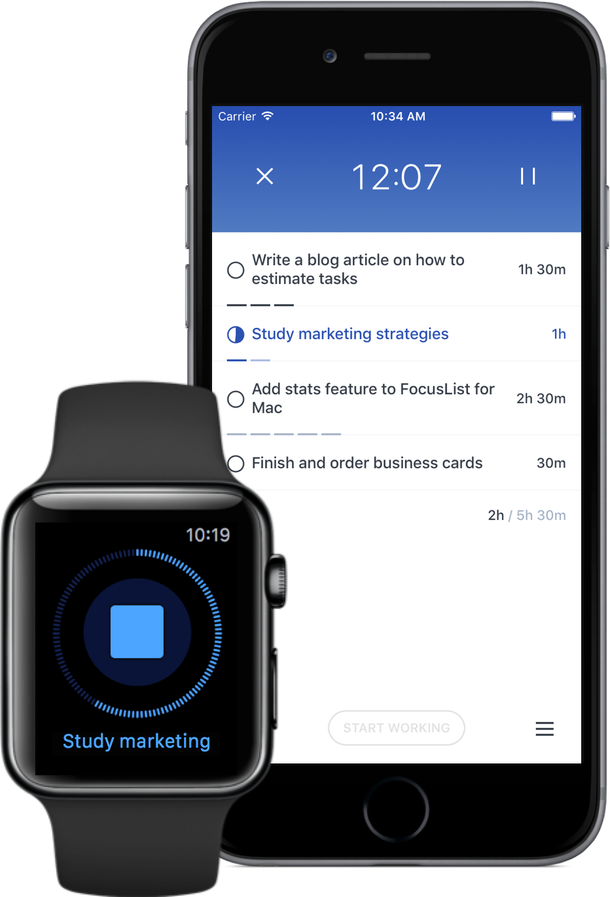

Do more deep work
FocusList is a daily planner & focus app based on Pomodoro technique. It helps you plan your day, stay focused and track your time.

It all starts with planning the day. You wake up, make some coffee and think about what you're doing today. Our daily planner functionality is the best way to keep track of your battle plan for the day.
Write down all the tasks for today. Split bigger tasks into smaller ones. Plan your day ahead and commit to do everything on your list.

For each task, mark your best estimate. FocusList will count everything and show what does your day look like.
Pick a task, do it for 25 minutes. Take a 5 minute break. That was one session. Keep going until the task is done.

One thing at a time. Always select one task that you’ll be working on, and dedicate your session to it.
Spend the next 25 minutes to focus, focus, focus on your task. Distractions will wait till your break.

Take the break even if you still have energy. Assimilate what you’ve learned. Start another cycle refreshed.
FocusList comes with time tracker built in! Was it a good day? Ask your data. Just open Stats and look at the history of sessions/day, what times you worked, and how good were your estimates.